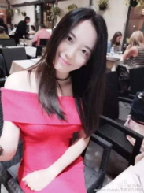

您的位置 : 首页 >> 最新资讯>>公司新闻
最新资讯
北小诗—从拥有百万粉丝的资深网红到成为伊莎美尔高管，是什么打动了她？
伊莎美尔最近聘请了个美艳四海八荒的女神级BOSS，她神似高圆圆，气质如白浅，刚来公司，就收获了众多的迷弟迷妹们，她就是刚刚上任的伊莎美尔网络主播运营总裁、百万粉丝超人气主播——北小诗！
 作为自媒体达人、百万粉丝超人气主播，是在什么机缘巧合下结缘伊莎美尔的呢？
(一)伊莎美尔与女神BOSS的邂逅
伊莎美尔，源自英国的贵族品牌，自品牌成立以来，专注女性美丽20年，从边陲小镇到繁华都市，12大明星倾情代言，千万女性因伊莎美尔重返年轻，重现魅力。
2016年，伊莎美尔在线上成立了创富联盟，在全国寻找当红网络主播做代言，缘分使然，伊莎美尔邂逅了女神BOSS，想要签约小诗BOSS做代言人，代言费是60万元，但小诗BOSS一直都没签约，说是要试试产品再考虑，她说她要对众粉丝负责，不能草率签约，伊莎美尔非常欣赏小诗BOSS的人格魅力，欣然同意，将伊莎美尔的产品送给了小诗BOSS进行试用
(二)女神BOSS大赞伊莎美尔
小诗BOSS由于经常网络直播，直播后还会制作些短视频到很晚，所以有时皮肤难免会油油的、偶尔冒个痘痘，抱着试试看的态度，BOSS首先试用了伊莎美尔的清泉活力水面膜（又名水库面膜），只用了短短几天，BOSS就对水库面膜的补水效果赞不绝口，于是又接二连三试用了伊莎美尔的泡泡面膜、娇点眼霜、瓷娃娃VV呼吸霜等产品，并将很多产品都送给了妈妈和闺蜜试用。BOSS妈妈在用了伊莎美尔的含有诺奖成果EGF的生物平皱素后，皱纹有明显淡化，皮肤也变得紧致了，而闺蜜也在用了产品后对伊莎美尔大大赞赏。
好产品是用事实说话的，经过3个月的产品试用，伊莎美尔赢得了北小诗、小诗妈妈、小诗闺蜜的一众好评，同时也为女神BOSS成为伊莎美尔网络主播运营总裁奠定了基础。
(三)女神BOSS签约伊莎美尔，成为伊莎美尔网络主播运营总裁
伊莎美尔与女神BOSS的缘分之桥是用伊莎美尔的产品搭建起来的，也是用伊莎美尔20年的品牌美誉度搭建起来的。
女神BOSS最后选择加入伊莎美尔，成为伊莎美尔网络主播运营总裁，不单单只是因为产品口碑好，更是想为自己的粉丝谋福利，想让粉丝也能成为伊莎美尔创富联盟中的一员，共同经营这份美丽又创富的事业。
(四)伊莎美尔创富联盟
伊莎美尔，源自英国的贵族品牌，自品牌成立以来，专注女性美丽20年，从边陲小镇到繁华都市，12大明星倾情代言，千万女性因伊莎美尔重返年轻，重现魅力。当传统门店与微商模式陷入瓶颈，我们大胆创新尝试，开创联盟共富新时代。
超人气主播倾情代言
百万资金打造网红计划
零门槛加入代理
无需囤货，免去进发货
20品牌认证保障